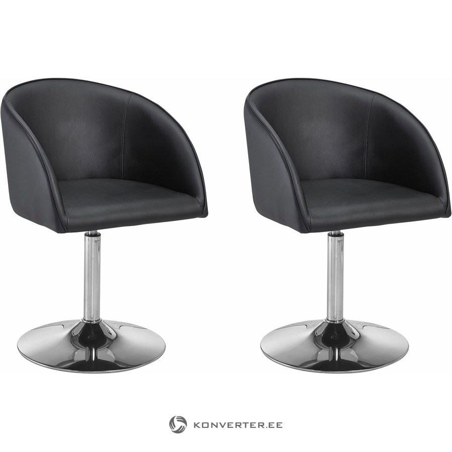

Naktiniai staliukai | Gintaro baldai
- Mieli LED „Flamingo“ vienaragio naktiniai žibintai ...
Gintaro baldai naktiniai staliukai Jūsų miegamajam – vienas geriausių pasirinkimų, norintiems organizuoti patogią, jaukią, tvarkingą ir skoningą erdvę apie savo lovą, tačiau nenorintiems mokėti krūvos pinigų už naktinį staliuką.Gintarobaldai.lt svetainėje rasite modernaus ir klasikinio dizaino naktinių staliukų itin žema kaina. - Naktiniai staliukai | Gintaro baldai
Naktiniai žibintai. Naujos prekės Naujas geležies virtuvės ritininis popierinis rankšluosčių laikiklis tualetinio popieriaus laikiklis Audinių laikymo stovas Kabineto kabyklos lentynų virtuvės organizatorius EUR € 11.10 Išparduota. 2018 virtuvė Nešiojama pakabinamoji drenažo dėžė Nuleidimo lentynos krepšelis Vonios laikymo ... - Naktiniai žibintai ant akumuliatorių (29 nuotraukos ...
Ultravioletiniai prožektoriai ir žibintuvėliai. Ultravioletinis žibintuvėlis su savo UV šviesa padės jums atpažinti netikras kupiūras, padės gintaro paieškoje, žvejyboje flourescenciniais masalais, rasti skysčių nutekėjimą automobilyje ir kitose situacijose. - LED naktiniai žibintai (40 nuotraukų): vaikų medienos ...
LED naktiniai žibintai - tai ateities žibintai, kurių išskirtiniai bruožai yra išskirtinai ilgas tarnavimo laikas ir didelis funkcionalumas. Produktai plačiai naudojami miesto apartamentuose ir kaimo namuose, jie lengvai integruojami į šiuolaikinį interjerą. - Naktiniai žibintai - Internetinė Parduotuvė
Naktiniai žibintai - Geriausios kainos, greitas pristatymas, kokybės užtikrinimas! Ateikite ir pasirinkti. Mūsų parduotuvė laukia tavęs. - Naktiniai žibintai žmonių partijos Įvykiai tapetai ...
Prekės tipas: „Night LightsIs“ baterijos: Nenaudojama: „HolidayModel“ numeris: L3D478Sertifikacija: RoHS, ce, FCC, EMCPower Šaltinis: Sausi akumuliatoriai ... - Naktiniai naktiniai žibintai nuo drugelio prie lovos ...
Naktiniai žibintai ant baterijų - puikus pasirinkimas kūdikio kambariui. Stiprybės ir trūkumai. Vaikų naktiniai žibintai ant baterijų turi neabejotinų pranašumų, todėl jie yra paklausūs. Pagrindinis šio priedo privalumas yra jo saugumas. Jis gali dirbti visą naktį, o tėvai bus ramūs, kad jų kūdikis būtų visiškai apsaugotas. - Šviestuvai, Žibintai | Gintaro baldai internetu
Naktiniai staliukai, veidrodžiai (8) Lovos (27) Vaikų ir jaunuolių kambario baldai (46) Lentynos (8) Kabyklos (2) Komodos (8) Vaikiškos kėdės (55) Lovos (9) Komplektai (6) ... Žibintai, žvakidės, žvakės Puslapyje rodyti: Filtruoti: Grįžti atgal. Kaina. Filtruoti ... - Naktiniai žibintai (84 nuotraukos): naktinis lemputė ...
Kokie įdomūs naktinio apšvietimo modeliai šiandien? Pavyzdžiui, naktinis lemputė miegamajame su mėnulio forma su judesio jutikliu bus įdomus visiems ir taps namo akcentu. Suaugusiųjų lempos gali būti aprūpintos žadintuvu, o vaikams - vaiko verkimo funkcija. - 11 naktinių žibintų, kurie jūsų vaiko kambaryje atrodys ...
Naktiniai žibintai gali atrodyti kaip šiek tiek smulkūs, palyginti su visa kita, kas jums reikia, kad užbaigtumėte savo vaiko erdvę, bet jie taip pat yra labai svarbūs - jie daro vaikus jaustis patogiai tamsoje, o tai reiškia, kad jie gauna daug naudos. Taigi, jūs žinote, kad jūs taip pat galite padaryti kuo mielesnius.

× Apie mus Apmokėjimas Pristatymas Garantijos Baldų salonai Kontaktai Krepšelis LT Prisijungti Toggle navigation Krepšelis Daugiau nei 15 metų baldų RINKOJE! Pristatymas visoje Lietuvoje NEMOKAMAS 3 mėnesių lizingas! ATSISKAITYK grynais, gavus prekes! +37046490400 I-V 8:00 - 18:00 Visi baldai Korpusiniai baldai Lovos Spintos Tachtos Spintelės Stalai Darbo stalai Darbo kėdės Komodos Sekcijos Kėdės Baro kėdės Baro stalai Lentynos Rūbų kabyklos TV staliukai Žurnaliniai staliukai Naktiniai staliukai Batų dėžės Vitrinos Veidrodžiai Virtuvės komplektai Valgomojo komplektai Kita Minkšti baldai Sofos Minkšti kampai Minkštų baldų komplektai Čiužiniai Antčiužiniai Foteliai Gultai, Supami krėslai Pufai Minkštasuoliai Virtuvė Virtuvės komplektai Virtuvės spintelės Valgomojo komplektai Stalai Kėdės Vitrinos Baro kėdės Baro stalai Brauni spintelės Praga spintelės Valerie spintelės Svetainė Korpusiniai baldai Svetainės komplektai Valgomojo komplektai Sekcijos Spintos Komodos Vitrinos Stalai Žurnaliniai staliukai TV staliukai Kėdės Spintelės Lentynos Kita Minkšti baldai Sofos Minkšti kampai Foteliai Gultai, Supami krėslai Pufai Minkštasuoliai Minkštų baldų komplektai Miegamasis Lovos Lovos su čiužiniais Miegamojo komplektai Spintos Spintelės Komodos Čiužiniai Antčiužiniai Kosmetiniai staliukai Naktiniai staliukai TV staliukai Veidrodžiai Lentynos Vaikų kambarys Vaikų kambario komplektai Kūdikių lovytės Lovos Tachtos Sofos Spintos Spintelės Komodos Rašomieji stalai Darbo kėdės Lentynos Pufai Minkštasuoliai Kita Prieškambaris Prieškambario komplektai Spintos Komodos Batų dėžės Rūbų kabyklos Veidrodžiai Lentynos Spintelės Biuras Darbo stalai Darbo kėdės Žurnaliniai staliukai Spintos Spintelės Foteliai Komodos Rūbų kabyklos Lentynos Kita Interjeras Namų kvapai - aromatai Dekoratyviniai augalai Šviestuvai, Žibintai Krepšiai, Dėžės Paveikslai Kilimai Dekoracijos Pagalvės Indai Vazos Žvakės Žvakidės Vazonai Kita Akcijos Sandėlio išpardavimas Akcijos! IŠPARDAVIMAS! TURIME SANDĖLYJE ! Prekės TIK internetu Baldai su pasirenkamu audiniu Pagrindinis › Miegamasis › Naktiniai staliukai Meniu Visi baldai Korpusiniai baldai Lovos Spintos Tachtos Spintelės Stalai Darbo stalai Darbo kėdės Komodos Sekcijos Kėdės Baro kėdės Baro stalai Lentynos Rūbų kabyklos TV staliukai Žurnaliniai staliukai Naktiniai staliukai Batų dėžės Vitrinos Veidrodžiai Virtuvės komplektai Valgomojo komplektai Kita Minkšti baldai Sofos Minkšti kampai Minkštų baldų komplektai Čiužiniai Antčiužiniai Foteliai Gultai, Supami krėslai Pufai Minkštasuoliai Virtuvė Virtuvės komplektai Virtuvės spintelės Valgomojo komplektai Stalai Kėdės Vitrinos Baro kėdės Baro stalai Brauni spintelės Praga spintelės Valerie spintelės Svetainė Korpusiniai baldai Svetainės komplektai Valgomojo komplektai Sekcijos Spintos Komodos Vitrinos Stalai Žurnaliniai staliukai TV staliukai Kėdės Spintelės Lentynos Kita Minkšti baldai Sofos Minkšti kampai Foteliai Gultai, Supami krėslai Pufai Minkštasuoliai Minkštų baldų komplektai Miegamasis Lovos Lovos su čiužiniais Miegamojo komplektai Spintos Spintelės Komodos Čiužiniai Antčiužiniai Kosmetiniai staliukai Naktiniai staliukai TV staliukai Veidrodžiai Lentynos Vaikų kambarys Vaikų kambario komplektai Kūdikių lovytės Lovos Tachtos Sofos Spintos Spintelės Komodos Rašomieji stalai Darbo kėdės Lentynos Pufai Minkštasuoliai Kita Prieškambaris Prieškambario komplektai Spintos Komodos Batų dėžės Rūbų kabyklos Veidrodžiai Lentynos Spintelės Biuras Darbo stalai Darbo kėdės Žurnaliniai staliukai Spintos Spintelės Foteliai Komodos Rūbų kabyklos Lentynos Kita Interjeras Namų kvapai - aromatai Dekoratyviniai augalai Šviestuvai, Žibintai Krepšiai, Dėžės Paveikslai Kilimai Dekoracijos Pagalvės Indai Vazos Žvakės Žvakidės Vazonai Kita Akcijos Sandėlio išpardavimas Akcijos! IŠPARDAVIMAS! TURIME SANDĖLYJE ! Prekės TIK internetu Baldai su pasirenkamu audiniu Apie mus Apmokėjimas Pristatymas Garantijos Baldų salonai Kontaktai Gintaro baldai Naujienos Geri darbai Spauda apie mus Baldų salonai Rekvizitai Paslaugos Apmokėjimas Nuolaidų kortelės Lizingas - Perku 3 Baldų nuoma Baldų pristatymas Garantijos Tax Free Pirkėjams Akcijos Leidiniai % Atsiliepimai Pagalba D.U.K Pirkimo taisyklės Baldų priežiūra Privatumo politika Kontaktai Mūsų privalumai Galimybė apžiūrėti prekę Pinigų gražinimo garantija PayPal/Paysera apmokėjimas Saugus naršymas LT Prisijungti Kaina (€) 20 iki 322+ Plotis (mm) 350 iki 650+ Aukštis (mm) 305 iki 924+ Gylis (mm) 338 iki 505+ Spalvos -- -- Riešutas (2) Ruda (2) Balta (11) Ąžuolas sonoma (8) Wenge (2) Juoda (4) Violetinė (1) San remo ąžuolas (1) Dab San Remo (3) Kaštonas (2) Rožinė (1) Balintas ąžuolas craft (1) Akacija (1) Pelenų (1) Melsva (1) Ąžuolas Belford (1) Snieginis uosis (1) Oniks (1) Sibiro maumedis (1) Ąžuolas satter (1) Ąžuolas vienuolyno (1) Kanjono pušis (1) Liono riešutas (1) Šimo šviesi (1) Sonoma tamsus (1) Medžiagos -- -- MDF (12) Laminuota MDP (14) Plastikas (1) MDP (2) Pristatymo terminas Iki 12 d.d. Virš 12 d.d. Filtruoti
Naktiniai staliukai
Puslapio dydis -- 30 60 90 Rikiavimas -- Rikiavimas Brangiausia viršuje Pigiausia viršuje Rodoma 30 iš 61 Turime sandėlyje!Naktinis staliukas BASIA
(3) Matmenys: 384 x 420 x 350 mm Turime sandėlyje Naujiena 20 € Turime sandėlyje!Naktinis staliukas
(0) Matmenys: 385 x 475 x 422 mm Turime sandėlyje 21 € E–kaina Turime sandėlyje!Naktinis staliukas BOS
(0) Matmenys: 410 x 405 x 456 mm Turime sandėlyje Naujiena 34 € E–kaina Turime sandėlyje!Naktinis staliukas ANG
(17) Matmenys: 402 x 376 x 491 mm Turime sandėlyje 40 € Turime sandėlyje!Naktinis staliukas KASP
(0) Matmenys: 405 x 335 x 510 mm Turime sandėlyje Naujiena Spalvos pasirinkimas 42 € E–kaina Turime sandėlyje!Naktinis staliukas VIV
(3) Matmenys: 340 x 480 x 400 mm Turime sandėlyje Naujiena Spalvos pasirinkimas 39 € Turime sandėlyje!Naktinis staliukas SEV
(0) Matmenys: 420 x 500 x 500 mm Turime sandėlyje Naujiena 87 € Akcija Turime sandėlyje!Naktinis staliukas MONA
(7) Matmenys: 376 x 530 x 544 mm Turime sandėlyje Naujiena 69 € Turime sandėlyje!Naktinis staliukas INDI
(14) Matmenys: 400 x 405 x 500 mm Turime sandėlyje 59 € E–kaina Turime sandėlyje!Naktinis staliukas
(14) Matmenys: 400 x 400 x 500 mm Turime sandėlyje Naujiena Spalvos pasirinkimas 70 € Akcija E–kaina Turime sandėlyje!Naktinis staliukas
(10) Matmenys: 400 x 400 x 500 mm Turime sandėlyje Naujiena Spalvos pasirinkimas 66 € E–kaina Turime sandėlyje!Naktinis staliukas
(18) Matmenys: 400 x 400 x 500 mm Turime sandėlyje Naujiena Spalvos pasirinkimas 70 € Akcija Turime sandėlyje!Naktinis staliukas (2 vnt)
(0) Matmenys: 415 x 533 x 498 mm Turime sandėlyje Naujiena 104 € Akcija Turime sandėlyje!Naktinis staliukas KOE
(16) Yra spalvų pasirinkimas! Matmenys: 400 x 445 x 585 mm Turime sandėlyje Spalvos pasirinkimas Nuo 45 € Gera kaina! Turime sandėlyje!Naktinis staliukas
(11) Matmenys: 370 x 503 x 535 mm Turime sandėlyje 112 € Akcija Turime sandėlyje!Naktinis staliukas ROZ
(10) Matmenys: 400 x 477 x 535 mm Turime sandėlyje Spalvos pasirinkimas 71 € E–kaina Turime sandėlyje!Naktinis staliukas VIN
(10) Matmenys: 414 x 650 x 566 mm Turime sandėlyje 322 € Turime sandėlyje!Naktinis staliukas ROZ
(0) Matmenys: 400 x 477 x 535 mm Turime sandėlyje Naujiena Spalvos pasirinkimas 95 € Akcija Turime sandėlyje!Naktinis staliukas AZT
(11) Matmenys: 410 x 430 x 500 mm Turime sandėlyje Naujiena 59 € Turime sandėlyje!Naktinis staliukas TIF
(13) Matmenys: 370 x 479 x 490 mm Turime sandėlyje 77 € Turime sandėlyje!Naktinis staliukas JAG
(15) Matmenys: 338 x 924 x 500 mm Turime sandėlyje Naujiena 59 € Turime sandėlyje!Naktinis staliukas
(14) Matmenys: 400 x 400 x 500 mm Turime sandėlyje Naujiena Spalvos pasirinkimas 59 € Turime sandėlyje!Naktinis staliukas
(0) Matmenys: 420 x 460 x 500 mm Turime sandėlyje 43 € Akcija Turime sandėlyje!Naktinis staliukas KENT
(8) Matmenys: 410 x 470 x 545 mm Turime sandėlyje Spalvos pasirinkimas 70 € Akcija Turime sandėlyje!Naktinis staliukas KENT
(19) Matmenys: 410 x 470 x 545 mm Turime sandėlyje Spalvos pasirinkimas 70 € Turime sandėlyje!Naktinis staliukas OLIV
(15) Matmenys: 360 x 450 x 560 mm Turime sandėlyje Naujiena 61 € Turime sandėlyje!Naktinis staliukas MALT
(15) Matmenys: 380 x 305 x 510 mm Turime sandėlyje Naujiena 46 € Turime sandėlyje!Naktinis staliukas
(12) Matmenys: 351 x 484 x 450 mm Turime sandėlyje Naujiena 37 € E–kainaNaktinis staliukas
(5) Matmenys: 400 x 400 x 500 mm Pristatymas iki 30 d.d. Naujiena Spalvos pasirinkimas 64 € E–kainaNaktinis staliukas
(0) Matmenys: 500 x 440 x 540 mm Pristatymas iki 60 d.d. Naujiena Spalvos pasirinkimas 55 € 1 2 3 ›
Gintaro baldai naktiniai staliukai Jūsų miegamajam – vienas geriausių pasirinkimų, norintiems organizuoti patogią, jaukią, tvarkingą ir skoningą erdvę apie savo lovą, tačiau nenorintiems mokėti krūvos pinigų už naktinį staliuką. Gintarobaldai.lt svetainėje rasite modernaus ir klasikinio dizaino naktinių staliukų itin žema kaina. Mūsų siūlomi naktiniai staliukai tiks bet kokiam miegamajam!
Kaip išsirinkti naktinį staliuką Jūsų miegamajam
Miegamasis kambarys yra neatsiejama kiekvieno gyvenamojo namo ar buto dalis. Dažnai žmonės pamiršta, koks iš tikrųjų jis yra reikšmingas. Kiekviena miegamojo detalė prisideda prie mūsų poilsio ir tinkamos aplinkos kūrimo, todėl kiekvienas centimetras turi ypatingą reikšmę. Dažnai žmonės nežino, kaip teisingai suderinti ir išsirinkti baldus, kokį kambario stilių pasirinkti, ar kokia spalva labiau tiks vienam ar kitam daiktui. Tai yra visiškai normalu – juk yra begalė skirtingų pasirinkimų, tad suklysti ypač lengva.
Rinkdamiesi baldus miegamajam kambariui pirmiausiai turėtume apsispręsti kokio interjero jis bus. Būtent tai yra tas atspirties taškas, nuo kurio priklauso kokius baldus mes rinksimės. Besirinkdami baldus dažniausiai daug laiko skiriame gero, patogaus čiužinio, spintos, lovos paieškai. Tačiau, ne ką mažesnę reikšmę turi lovos staliukai. Staliukas prie lovos ilgainiui gali tapti vienu patogiausių dalykų kambaryje. Jis puikiai tinka pasidėti mobiliajam telefonui ar knygai, kurią skaitote prieš miegą ar rytais, stiklinei vandens ar bet kam kitam. Moterims naktiniai staliukai puikiai praverčia pasidėti lūpų balzamui ar rankų kremui. Taip pat, naktiniai staliukai dažniausiai yra ta vieta, ant kurios laikome žadintuvus.
Jei norite sukurti erdvės ir vietos pojūtį mažame miegamajame, jums puikiai tiks minimalistinis baltas naktinis staliukas. Balti naktiniai staliukai labiau tinka mažuose kambariuose, nes jie tarsi padidina ir praplečia patalpą. Taip pat, balti baldai atrodo ypač tvarkingai ir gražiai. Tačiau, svarbu paminėti, kad baldų spalvą ir tekstūrą turėtumėte derinti ne tik pagal interjero dizainą, bet ir pagal savo gyvenimo būdą. Jei turite mažų vaikų ar naminių gyvūnų, rekomenduojama vengti baltos spalvos baldų, nes jie gali labai teptis. Tačiau, mažą miegamąjį šviesūs baldai vizualiai padidins. Jei jūsų miegamasis kambarys yra modernaus stiliaus, jame turėtų vyrauti modernaus stiliaus baldai. Modernus naktiniai staliukai dėl savo asketiškumo labiau tinka mažų gabaritų kambariams.
Jeigu jūsų miegamasis yra didesnis, geriau rinktis klasikinio stiliaus baltą naktinį staliuką. Klasikinio stiliaus baldai puikiai atrodo didesnėse patalpose, nes jie neužpildo visos erdvės. Tokio interjero dizaino kambaryje taip pat derėtų naktiniai staliukai iš medžio. Tinkamai parinkti jie gali suteikti miegamajam autentiškumo ir tematikos. Taip pat, klasikinio stiliaus kambaryje naktiniai staliukai prie lovos gali būti didesni. Dideliame kambaryje galite sutalpinti du lovos staliukus iš abiejų lovos pusių. Maži staliukai prie lovos yra taip pat patogūs, tačiau juk niekada nebūna per daug vietos būtiniausiems daiktams.
Jei nežinote kaip tinkamai suderinti staliukus prie lovos su kitais baldais, galite įsigyti jau sukomplektuotus miegamojo baldų komplektus . Į tokius rinkinius įeina lovos , spintos , komodos , spintelės ir kosmetiniai staliukai . Išsirinkę jums patinkančius baldus, visada galite juos apžiūrėti viename iš Gintaro baldai baldų salonų.
Plačiau Mažiau 0 × +37046490400 I-V 8-18val. Gintaro baldai Naujienos Geri darbai Spauda apie mus Baldų salonai Rekvizitai Paslaugos Apmokėjimas Nuolaidų kortelės Lizingas - Perku 3 Baldų nuoma Baldų pristatymas Garantijos Tax Free Pirkėjams Akcijos Leidiniai % Atsiliepimai Pagalba D.U.K Pirkimo taisyklės Baldų priežiūra Privatumo politika Kontaktai Mūsų privalumai Galimybė apžiūrėti prekę Pinigų gražinimo garantija PayPal/Paysera apmokėjimas Saugus naršymas Naujienlaiškis Gaukite naujausius pasiūlymus el. paštu Sekite mus Visos teisės saugomos © 2020 Gintaro Baldai, UAB Sukurta: SONAROMūsų svetainėje naudojami slapukai, kad užtikrintume jums teikiamų paslaugų kokybę. Tęsdami naršymą jūs sutinkate su slapukų politika.
Daugiau informacijos
Susipažinau Prisijungti Registruotis ×Naujo vartotojo registracija
